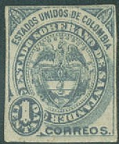
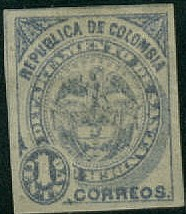
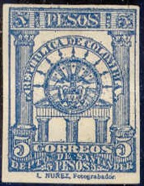

Return To Catalogue - Colombia
Note: on my website many of the
pictures can not be seen! They are of course present in the
catalogue;
contact me if you want to purchase it.
Santander used its own stamps from 1884 till 1904.
Inscription "ESTADOS UNIDOS DE COLOMBIA"

1 c blue 5 c red 10 c violet Inscription 'REPUBLICA DE COLOMBIA' (1887)

1 c blue 5 c red 10 c violet
Value of the stamps |
|||
vc = very common c = common * = not so common ** = uncommon |
*** = very uncommon R = rare RR = very rare RRR = extremely rare |
||
| Value | Unused | Used | Remarks |
| Inscription 'ESTADOS UNIDOS DE COLOMBIA' | |||
| 1 c | ** | ** | |
| 5 c | ** | ** | |
| 10 c | *** | *** | |
Inscription 'REPUBLICA DE COLOMBIA' |
|||
| 1 c | * | * | |
| 5 c | *** | *** | |
| 10 c | R | R | |
1 c blue 5 c red 10 c violet
Value of the stamps |
|||
vc = very common c = common * = not so common ** = uncommon |
*** = very uncommon R = rare RR = very rare RRR = extremely rare |
||
| Value | Unused | Used | Remarks |
| 1 c | *** | *** | Two types |
| 5 c | * | * | Error 5 c lilac (colour of 10 c): RR |
| 10 c | ** | ** | |

Forgeries of the 5 c value.
1 c blue 5 c red 5 c red on lilac (eagle in circle, 1892) 10 c violet
Value of the stamps |
|||
vc = very common c = common * = not so common ** = uncommon |
*** = very uncommon R = rare RR = very rare RRR = extremely rare |
||
| Value | Unused | Used | Remarks |
| 1 c | ** | ** | |
| 5 c red | *** | *** | |
| 5 c red on lilac | ** | ** | |
| 10 c | ** | ** | |
5 c brown 5 c green (1896)
Value of the stamps |
|||
vc = very common c = common * = not so common ** = uncommon |
*** = very uncommon R = rare RR = very rare RRR = extremely rare |
||
| Value | Unused | Used | Remarks |
| 5 c brown | *** | *** | |
| 5 c green | *** | *** | |
(Reduced view)
1 c black on green 5 c black on red 10 c blue
Value of the stamps |
|||
vc = very common c = common * = not so common ** = uncommon |
*** = very uncommon R = rare RR = very rare RRR = extremely rare |
||
| Value | Unused | Used | Remarks |
| 1 c | * | * | |
| 5 c | * | * | |
| 10 c | *** | *** | |

50 c red on red 'Medio centavo' (=1/2 c) on 50 c red on red (1907)
Value of the stamps |
|||
vc = very common c = common * = not so common ** = uncommon |
*** = very uncommon R = rare RR = very rare RRR = extremely rare |
||
| Value | Unused | Used | Remarks |
| 50 c | * | * | Some errors in the overprint (wrong letters) exist: *** to R |
| 1/2 c on 50 c | * | * | Errors: 'Cocreos': *** or 'Corceos': *** |
These fiscal stamps were also used without the overprint as postage stamps. Here with cancel 'CORREOS DEL DEPARTAMENTO BUCARAMANGA'.

5 c green 5 c blue 10 c red 10 c brown 20 c brown 20 c green 50 p yellow (train) 50 p lilac (train) 1 P black 1 P blue 5 P blue 5 P red 10 P red
Value of the stamps |
|||
vc = very common c = common * = not so common ** = uncommon |
*** = very uncommon R = rare RR = very rare RRR = extremely rare |
||
| Value | Unused | Used | Remarks |
| 5 c green | * | * | |
| 5 c blue | * | * | |
| 10 c red | * | * | |
| 10 c brown | * | * | |
| 20 c brown | * | * | |
| 20 c green | * | * | |
| 50 p yellow | * | * | |
| 50 p lilac | * | * | |
| 1 P black | * | * | |
| 1 P blue | * | * | |
| 5 P blue | * | * | |
| 5 P red | ** | ** | |
| 10 P | ** | ** | Also on red or blue paper |
The values 5 c black, 20 c black, 1 P black on yellow and 5 P blue on yellow also seem to exist (non issued?): R.
Various bogus surcharges were issued for stamp collectors, after Santander stopped using its own stamps in 1906. Examples: 'Medio Cvo.', 'UN Cvo.', '2 Centavos' or '2 Cvs.'. They were applied to the previous issue of 1904 and the Cucuta 1904 issue. Examples:

I've seen full sheets with cancel 'CORREOS DEL DEPARTAMENTO BUCARAMANGA' in an ellipse with a star-shaped object besides it. I don't know what these cancels were used for (maybe cancelled to order?), example:
Part of sheet with 'CORREOS DEL DEPARTAMENTO BUCARAMANGA' cancel,
reduced size
1 c black on green 2 c black on brown 5 c black on red 10 c black on red 20 c black on yellow
Two types of these stamps exist, one with inscription 'Gobierno Provisorio' and one with 'Gobierno Provisional'. Futhermore the values 5 c, 10 c and 20 c exist with vertical overprint 'Andres B. Fernandez'.
Value of the stamps |
|||
vc = very common c = common * = not so common ** = uncommon |
*** = very uncommon R = rare RR = very rare RRR = extremely rare |
||
| Value | Unused | Used | Remarks |
| 'Gobierno Provisorio' or 'Gobierno Provisional' (same value) | |||
| 1 c | R | *** | |
| 2 c | R | *** | |
| 5 c | *** | *** | |
| 10 c | R | *** | |
| 20 c | R | *** | |
| With overprint 'Andres B. Fernandez' | |||
| All values | RR | R to RR | |
1 c black 1 c green on yellow 2 c green 2 c red on yellow 5 c blue on yellow 5 c red 10 c brown 10 c blue 20 c green 20 c red 50 p violet 50 p red 1 P yellow 1 P lilac
Value of the stamps |
|||
vc = very common c = common * = not so common ** = uncommon |
*** = very uncommon R = rare RR = very rare RRR = extremely rare |
||
| Value | Unused | Used | Remarks |
| 1 c black | * | * | |
| 1 c green on yellow | ** | ** | |
| 2 c green | * | * | |
| 2 c red on yellow | ** | ** | |
| 5 c blue on yellow | ** | ** | |
| 5 c red | * | * | |
| 10 c brown | ** | ** | |
| 10 c blue | * | * | |
| 20 c green | *** | *** | |
| 20 c red | * | * | 20 c brown: *** |
| 50 c violet | ** | ** | |
| 50 c red | *** | *** | Usually on yellowish paper, on white paper: RR |
| 1 P yellow | *** | *** | |
| 1 P lilac | R | R | |
A 1 p black seems to exist (non issued?): RR

1 P black.
Various bogus surcharges were issued for stamp collectors, after Santander stopped using its own stamps in 1906. Examples: 'Medio Cvo.', 'UN Cvo.', '2 Centavos' or '2 Cvs.'. They were applied to the previous issue of 1904 and the Santander 1904 issue. Examples:

1 c green (1929) 2 c red (1929) 4 c green on yellow 4 c blue (1929) 10 c violet (1929)
A registration label issued during the same period, inscription 'COLOMBIA NORTE DE SANTDER' (note the missing 'A'), 'RECOMENDADO CORREO RAPIDO DEPARTAMENTAL.'

10 c lilac registration label

{kind=link}
{kind=link}